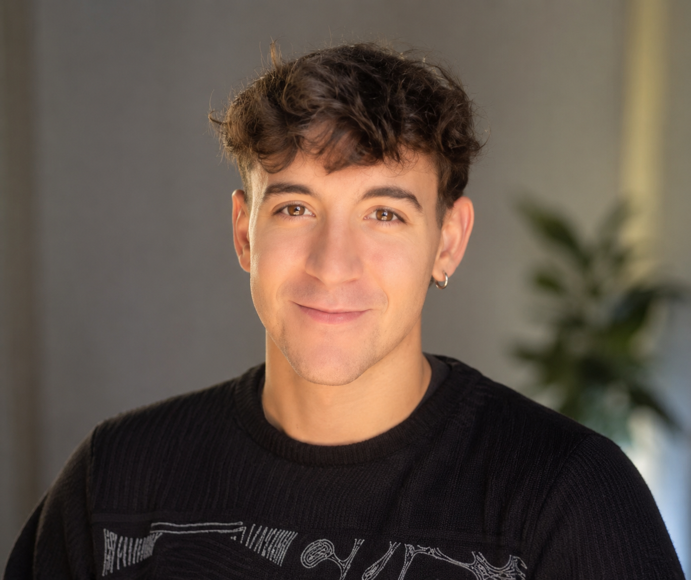

Director de fotografía y asistente de cámara.
Nací en 2003, en Montevideo, Uruguay. Finalicé mis estudios en la Escuela de Cine del Uruguay (ECU) y actualmente curso el Máster en Dirección de Fotografía en la Escola Superior de Cinema i Audiovisuals de Catalunya (ESCAC) en Barcelona.
Tengo la suerte de trabajar como Asistente de Cámara y Video Assist en producciones industriales donde obtengo conocimiento que luego vierto en mis trabajos como Director de fotografía.
Me interesa seguir formándome, tanto desde lo académico como desde la observación e intercambio con profesionales que admiro, para eventualmente poder ejercer principalmente como Director de fotografía.
Cinematographer and camera assistant.
I was born in 2003 in Montevideo, Uruguay. I completed my studies at Escuela de Cine del Uruguay (ECU) and I am currently pursuing a Master's Degree in Cinematography at Escola Superior de Cinema i Audiovisuals de Catalunya (ESCAC) in Barcelona.
I have the opportunity to work as a Camera Assistant and Video Assist on professional productions, where I gain knowledge and experience that I later bring into my work as a cinematographer.
I am interested in continuing my training, both academically and through observation and exchange with professionals I admire, with the goal of eventually working primarily as a cinematographer.
 Director de fotografía · Asistente de cámara
Director de fotografía · Asistente de cámara